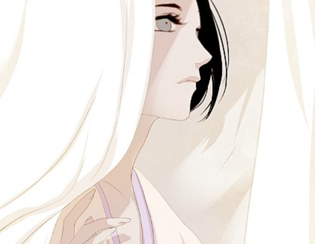
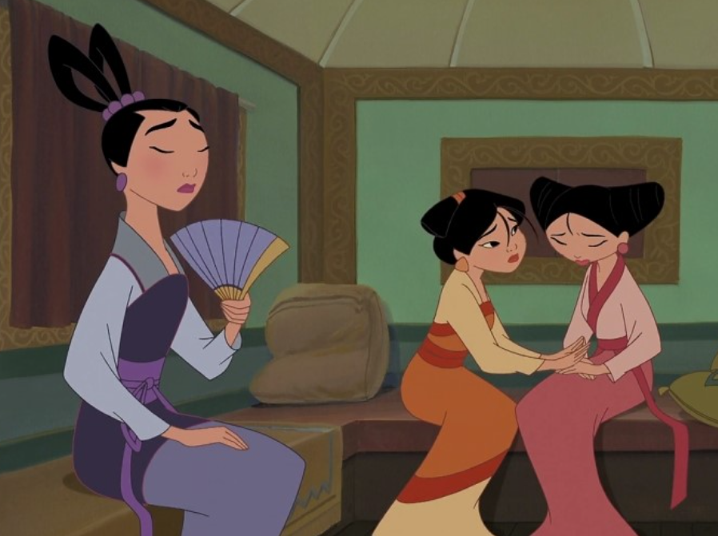

영화 '뮬란'을 각색해서 웹툰으로 만드는 방법도 있다.
'뮬란' 영화 실사판을 홍보하기 위해 예고편 웹툰은 만들어진 적이 있는데,
아직까지 하나의 이야기를 다루는 웹툰은 만들어진 적이 없어서
영화 '뮬란' 내용을 웹툰으로 만드는 것도 좋을 것 같다는 생각을 했다.
영화와 비교했을 때 웹툰의 강점은
1) 내용을 쉽고 간편하게 끊어서 볼 수 있다 (디지털 접근성이 좋다).
2) 다양한 그림체로 심도 깊은 분위기를 표현해 낼 수 있다.
3) 연출에 제한이 없고, 함축적인 대사와 표현으로 의미 전달이 가능하다.
라고 생각하는데, 이러한 웹툰의 장점을 살려서 '뮬란'의 분위기를 아름답게
표현해 줄 수 있는 작가를 찾아서 웹툰을 제작하는 것도 좋을 것 같다.
중국을 배경으로 궁중 암투를 그린 다음 웹툰 "작약만가 : 불환곡"
▲ 유려하고 얇은 그림체와 붉은색과 황금색을 주로 쓰는 색채감이
중국을 배경으로 하는 '뮬란'을 표현하기에 좋아 보인다.
『뮬란』은 '진정한 나 자신'을 찾는다는 데서 의의가 있는 작품이다.
그러나 이 작품은 현실적으로 생각해 봐야 할 만한 부분들도 존재한다.
현실적인 이유로 뮬란처럼 행동하지 못하는 사람들도 존재하기 때문이다.
『뮬란 2』는 바로 이러한 내용들을 다루고 있다.
『뮬란 2』는 『뮬란』의 후속편으로, 리샹과 뮬란이 결혼을 준비하는 과정에서
생기는 어려움을 주된 내용으로 다루고 있다. 『뮬란』이 '진정한 나 자신'을
강조한 것에 비해, 『뮬란 2』는 개인과 사회의 대립에 대해 다루고 있다.
두 가치 역시 쉽게 포기할 수 없을 만큼 소중한 것들이기에 이는 『뮬란』의
내용과 대립되어 보이기까지 한다. 이러한 이야기를 웹툰 연출로 나타내면
흥미로울 것 같고, 『뮬란 2』의 내용을 기반으로 해서 『뮬란』을 재해석한다면
개인과 사회의 대립 속에서, 진정한 나 자신을 찾는 법은 과연 무엇일까? 라는
답을 사람들에게 던지고, 그 과정 속에서 답을 찾을 수 있을 것이라는 확신이 들었다.
이 웹툰과 기존 『뮬란』과의 차별점은 다음과 같다.
1) '뮬란'이 아닌 『뮬란 2』에 나오는 세 공주들이 주인공이 되면서
처음부터 진정한 자기 자신을 찾으려고 노력했던 뮬란과는 다르게,
사회에 편승했지만 다시 자기 자신을 돌아보는 모습을 보여줄 예정이다.
2) 『뮬란』은 '진정한 개인'에 중점을 맞췄지만, 개인은 사회가 없다면
존재하기 힘든 면 역시 존재한다. 따라서 개인과 사회 사이의 선을
잘 지키는 것이 중요한데, 이 웹툰에서는 이를 보여줄 수 있을 것이다.
웹툰 『뮬란』 등장인물
팅팅 (첫째 공주)
메이 (둘째 공주)
수 (셋째 공주)
계골국 첫째 왕자
* 공주와 왕자의 이미지는 웹툰 『작약만가』에서 가져왔습니다.
* 영화 속 공주와 왕자와의 성격과 다른, 재해석이 포함되어 있습니다.
웹툰 『뮬란』 줄거리

"진정한 나 자신을 찾는 것은 정말로 가능할까?"
전설처럼 퍼져 버린 뮬란의 이야기. 그 이야기를 듣는 메이는
아직도 믿기지 않는다. 정말 그렇게 자유로운 행동이 가능하다고?
공주인 자신에게는 그 모든 일들이 마치 신화 속 이야기 같기만 하다.
우연한 계기로 뮬란을 만나서 자유를 향해 한 발 뻗을 수 있을 것 같았으나,
때마침 들어오게 되는 정략결혼의 이야기. 차분한 팅팅과
자유로운 수 사이에서 메이는 혼란스러워지기 시작하는데…….
웹툰 『뮬란』 스토리보드

-1. 뮬란의 이야기는 전설이 되어서 어린아이들에게 노래처럼 불리게 된다.
-2. 메이는 이를 듣고 "과연 나 자신도 그럴 수 있을까?"하는 의문을 품는다.
-3. 마음을 확인한 샹과 뮬란은 의견을 맞추며 결혼 준비를 하게 된다.
-4. 여인이 혼례하면 사당의 소유권은 남편 가문에게 넘어가는 풍습이 존재한다.
-5. 그러면 본인이 수호신의 자리를 잃기에, 무슈는 결혼을 망치려고 한다.
-6. 샹과 뮬란은 서로 징표를 사기 위해 시장에서 함께 만나기로 약속한다.
-7. 그러나 무슈의 꼬임으로 인해 둘은 서로 만나지 못하게 된다.
-8. 뮬란은 그때 공주들을 우연히 만나고, 메이랑 수와 이야기를 나눈다.
-9. 메이는 진취적이고 당당한 뮬란을 보며 그녀의 '검'에 흥미를 보인다.
-10. 뮬란과 작별한 후, 다시 한번 시장에 나가고 싶었던 메이는 수와 함께 외출한다.
-11. 수와 함께 시장에 나가 검을 보던 도중, 패거리들과 시비가 붙게 된다.
-12. 그때 우연히 길을 가던 중이었던 야오가 메이를 구해주게 된다.
-13. 야오는 검을 진중하게 바라보는 메이에게 호기심과 흥미를 느낀다.
-14. 메이 또한 자신을 검을 보는 여자라고 매도하지 않는 야오에게 관심을 가진다.
-15. 한편, 그 시각 황제는 정략혼을 위해 뮬란과 샹을 궁으로 불러들인다.
-16. 뮬란은 공주들의 호위를 위해 야오, 링, 치엔포를 불러오고, 서로 만나게 된다.
-17. 다시 서로를 만나게 된 야오와 메이는 즐거움의 대화를 나눈다.
-18. 수 또한 밝게 그들에게 다가갔으며, 특히 자신과 잘 맞는 치엔포와 친해진다.
-19. 팅팅은 링과 형식적인 대화를 시도하지만, 곧 대화에 진심으로 빠지고 만다.
-20. 그들은 서로 긍정적인 감정에 빠지지만, 황제는 계골국과 정략혼을 진행한다.
-21. 계골국의 왕자가 도착하고 세 명의 공주와 왕자는 서로 만남을 가지게 된다.
-22. 그 과정에서 뮬란은 샹과 정략혼의 옳고그름에 대해 이야기를 나누며 싸운다.
-23. 공주들은 왕자가 좋은 사람이라는 건 느꼈지만, 정략혼에 대한 확신이 없다.
-24. 그러나 정략혼으로 훈족을 막을 수 있기에, 그들은 다시 왕자를 찾아간다.
-25. 마차를 타고 왕자에게 가던 도중, 무슈가 실수로 공주들의 마차를 밀게 된다.
-26. 마차가 절벽 아래로 떨어지지만, 다행히 샹과 뮬란, 3총사가 공주들을 구한다.
-27. 그 과정에서 메이가 다칠 뻔했지만, 야오는 메이 대신 다치고 그녀를 구한다.
-28. 메이는 그 모습을 보면서 결정한다. 야오와 혼인을 해야겠다고.
-29. 그러면서 메이는 자신의 감정에 충실하라며, 팅팅을 설득하기 시작한다.
-30. 링에게 좋은 감정을 가지고 있던 팅팅은 메이의 말에 설득되는 모습을 보인다.
-31. 무슈는 이를 공주들이 리샹을 험담하는 것처럼 연출한다.
-32. 무슈의 이간질로 인해 뮬란과 샹은 다시 한번 다투게 된다.
-33. 마차가 망가져서 원래 길로 갈 수 없었기에, 다른 방식으로 왕자를 만나러 간다.
-34. 왕자는 여러 서류들을 내밀며 혼인을 언급했는데, 이때 수가 충격을 받는다.
-35. 자신의 생각과는 다르게 정략결혼이 중대한 사안이라는 것을 알게 된 것이다.
-36. 팅팅은 원칙주의자였기에 필요하다면 정략결혼도 불사한다는 입장을 내보인다.
-37. 그러나 뮬란이 그녀를 다시 설득하고, 팅팅은 링을 다시 한번 만나러 나간다.
-38. 샹은 뮬란이 정략결혼을 깨는 모습에 다시 그녀와 한번 갈등을 일으킨다.
-39. 샹은 원칙주의자였기에 신하와 공주가 사랑하는 것은 옳지 않다고 생각한다.
-40. 또한, 그는 나라를 위해서는 정략결혼이 최선의 방법이라고 여긴다.
-41. 그러나 뮬란은 자기 자신의 의지가 가장 소중하다고 그에게 말한다.
-42. 계속된 대립에 뮬란은 풀이 죽게 되고, 결국 무슈는 자신의 만행을 고백한다.
-43. 그에 대한 오해를 풀게 되자 뮬란은 샹에게 달려가려고 한다.
-44. 그러나 그 순간 재물을 노린 도적들에게 메이가 납치당한다.
-45. 메이는 수를 보호하기 위해 검을 들고 싸웠으나, 결국 납치당하고 만 것이다.
-46. 메이는 마지막 순간 수에게 "너 자신을 위해 살아!"라고 외친다.
-47. 그 말을 듣고, 수도 책임감을 느끼며 감정에 충실해지기로 한다.
-48. 팅팅 또한 검까지 들어가며 싸우는 메이의 모습을 보고 마음이 변하게 된다.
-49. 결국 팅팅은 정략혼을 포기하고 링을 찾아가고, 수도 치엔포를 찾아간다.
-50. 그 사이 뮬란과 샹은 서로 오해를 풀고 메이를 구하러 가게 된다.
-51. 그러나 메이를 구하는 과정에서 샹이 절벽 밑으로 추락하고 만다.
-52. 이를 슬퍼한 뮬란은 세 공주 대신 자신이 계골국 왕자와 혼인하기로 한다.
-53. 그러나 공주들의 모습을 본 계골국 왕자는 자신의 입장을 정한 상태였다.
-54. 그는 뮬란과의 혼인을 원하지 않음을 자신의 아버지에게 분명히 말한다.
-55. 그럼에도 불구하고 계골국의 왕은 혼례를 강행하려 한다.
-56. 그러자 무슈가 계골국 신화 속 전설의 용인 척하여 이를 막는다.
-57. 또한 죽은 줄만 알았던 샹도 살아 돌아오면서 뮬란과 감격의 재회를 이룬다.
-58. 세 공주와 계골국의 왕자는 각자 고향으로 돌아오게 된다.
-59. 두 나라는 혼인 대신 공고한 동맹을 맺기로 합의한다.
-60. 서로 교역을 활발히 하기로 했으며, 인재를 나누기로 한다.
-61. 또한, 통합 군대를 만들고 지형에 맞는 자주 국방을 실현하기로 합의한다.
-62. 집으로 돌아온 뮬란과 샹은 다시 정식으로 혼인하게 되고, 사당을 합친다.
-63. 무슈는 리샹의 배려 덕분에 수호신의 지위를 유지할 수 있게 된다.
-64. 메이는 둘을 따로 찾아가 자신의 징표를 주며 둘의 결혼을 축복한다.